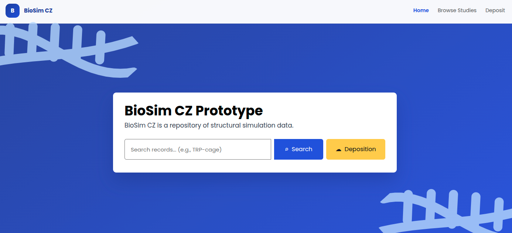
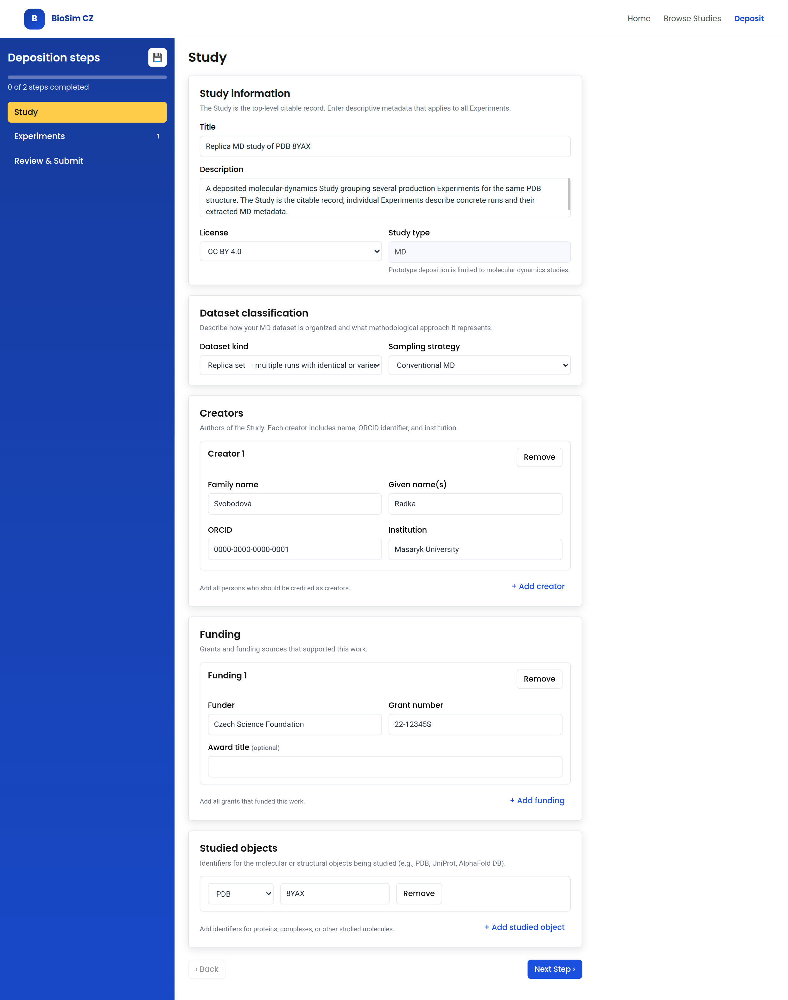
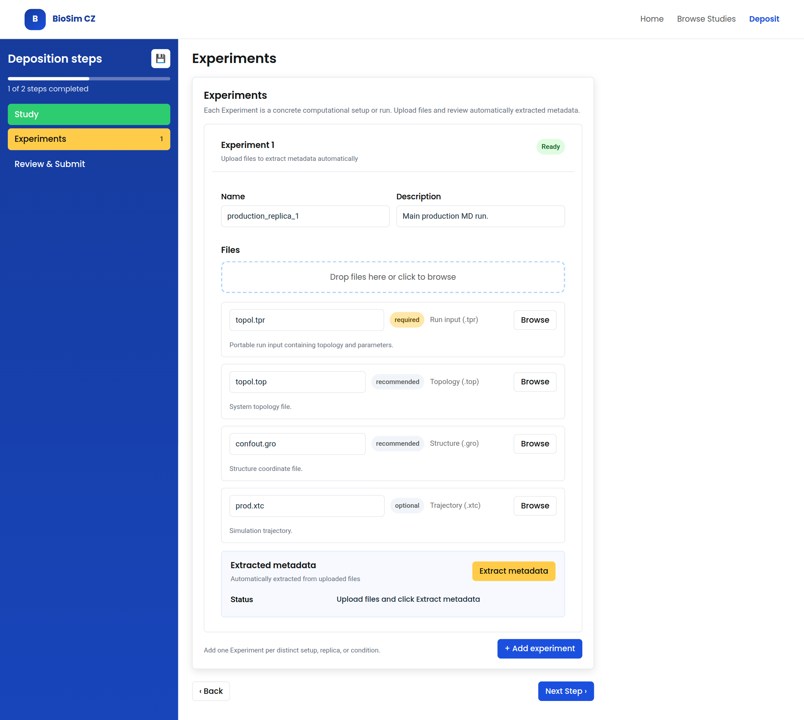
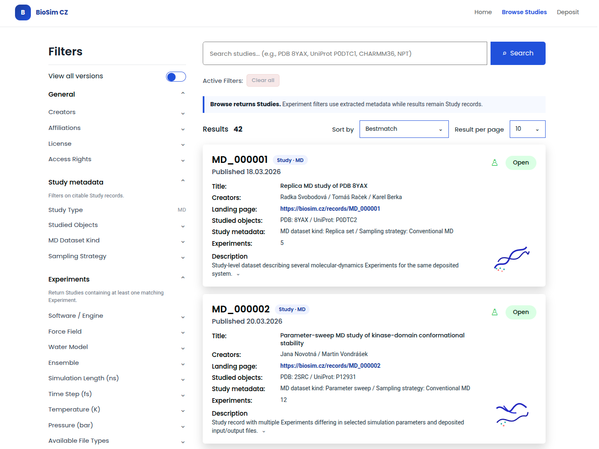
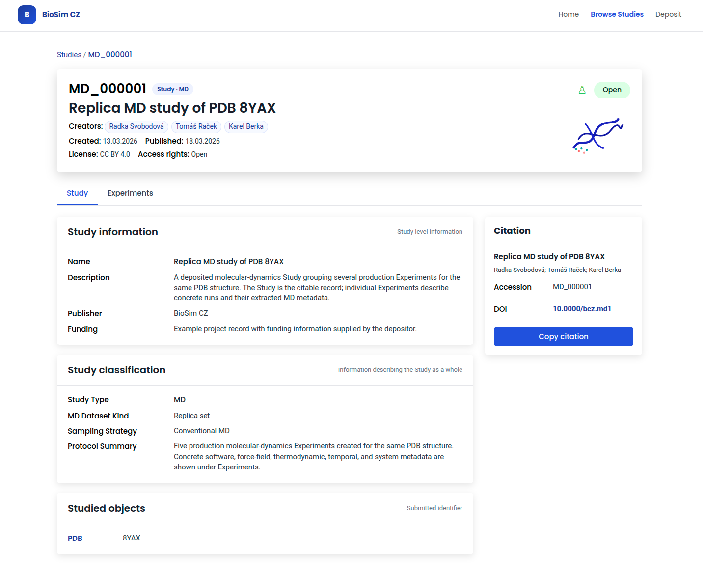
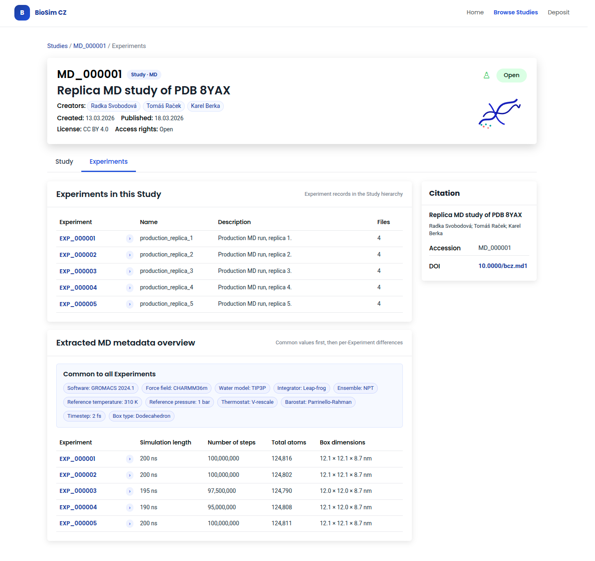
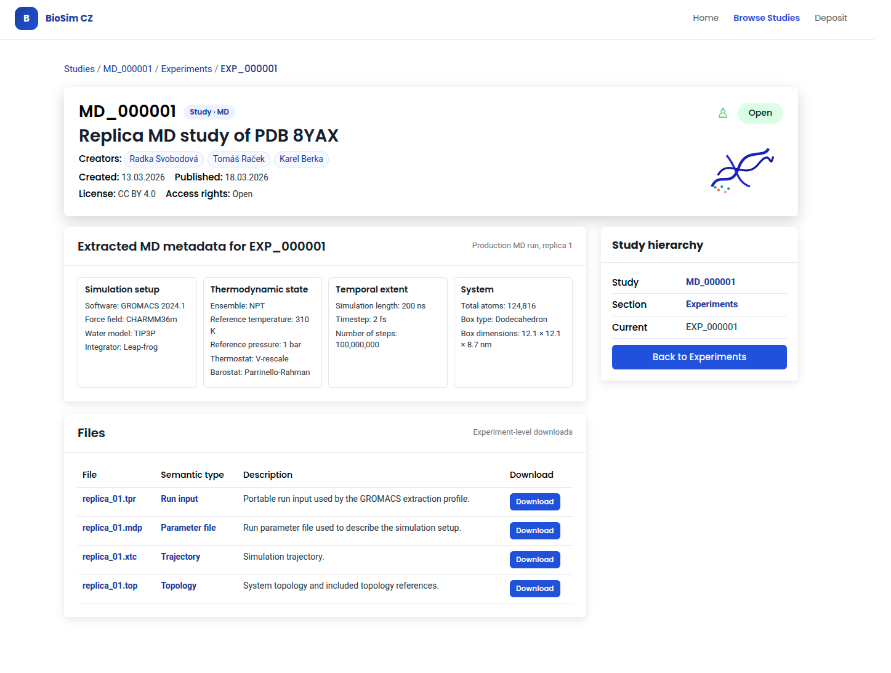

BioSim CZ Architecture
The interactive version of this document is available at biosimcz-architecture.biodata.ceitec.cz.
Dedication
This output was created with the support of the Ministry of Education, Youth and Sports and the Operational Program Johannes Amos Comenius within the project Open Science II (reg. No. CZ.02.01.01/00/24_030/0015041).
Authors
| Role | Name | ORCID | Organization | |
|---|---|---|---|---|
| Project Lead | Radka Svobodová | radka.svobodova@ceitec.muni.cz | 0000-0002-3840-8760 | Masaryk University |
| Data Curator | Vladimír Horský | vladimir.horsky@mail.muni.cz | 0000-0002-9252-5386 | Masaryk University |
| Architect | Tomáš Raček | tomas.racek@muni.cz | 0000-0002-0296-2452 | Masaryk University |
| Interoperability expert | Adrián Rošinec | adrian@muni.cz | 0000-0002-7748-5590 | Masaryk University |
| Domain expert | Karel Berka | karel.berka@upol.cz | 0000-0001-9472-2589 | Palacký University |
License
This work is licensed under the Creative Commons Attribution 4.0 International License (CC BY 4.0). License: https://creativecommons.org/licenses/by/4.0/

1 BioSim CZ overview
This section presents the overview and necessary context for the BioSim CZ repository. BioSim CZ is intended to provide storage, management, access, and further processing for structural simulation data concerning 3D structures of biomacromolecules.
See the Glossary for definitions of domain and platform terms.
1.1 Purpose and Current Target
This document describes BioSim CZ as a repository for structural simulation data. The current architecture target is the prototype, corresponding to feasibility-study output B_2.1.
The prototype architecture focuses on molecular dynamics (MD) data and covers:
- the prototype repository architecture,
- the metadata extraction and FAIRification flow,
- the molecular-dynamics metadata schema.
The complete-version goals are mentioned only where they provide context for the prototype scope or future development direction.
1.2 Source Basis and Traceability
The architecture reflects the requirements described in BioSim CZ feasibility study. The relevant feasibility-study outputs are:
| Feasibility-study output | Scope |
|---|---|
| B_2.1 | Architecture design of the prototype repository, including the metadata extractors and molecular-dynamics metadata schema. This is the current architecture target. |
| B_2.2 | Functional prototype of the BioSim CZ repository limited to molecular dynamics data. |
| B_2.3 | Architecture design of the complete repository, including metadata extractors and all metadata schemas. |
| B_2.4 | Complete version of the BioSim CZ repository. |
| B_2.5 | Functional connection of the complete version of the repository with MDDB and ELIXIR data resources. |
1.3 Project Context
BioSim CZ is the Czech repository for structural simulation data. It is part of the NRP and is implemented using CESNET Invenio.
| Area | Context |
|---|---|
| Repository role | Czech repository for structural simulation data |
| Platform | Part of the NRP |
| Implementation base | CESNET Invenio |
| Metadata schema | Domain-specific BioSim CZ metadata schema extends CCMM |
| Current architecture target | Prototype for molecular dynamics datasets |
| Complete-version goals | Coarse-grained simulations, predicted structural ensembles, and external interoperability |
| Interoperability | Expected later connection to NMD, BioExcel MDDB / MDposit, ELIXIR CZ, bio.tools, PDBe-KB, and 3D-Beacons Network |
1.4 Prototype Scope and Development Direction
BioSim CZ is developed in two stages: a molecular-dynamics prototype followed by a complete version with broader data coverage and external integrations.
1.4.1 Current Prototype Scope
The prototype is the current architecture target. It is limited to MD data and covers:
- creation of a dataset,
- upload, storage, publication, discovery, download, and sharing of MD data through the standard CESNET Invenio publication, access, and download behaviour,
- repository-side metadata processing for MD data:
- metadata extraction from GROMACS molecular-dynamics data,
- normalization and conversion of extracted metadata into an engine-agnostic MD metadata schema,
- basic validation needed for metadata extraction, metadata mapping, and user review.
- assignment and display of a human-readable BioSim CZ accession identifier for each published dataset,
- DOI registration support in a test mode,
- metadata-based discovery by text search, metadata filters, PDB ID, and UniProt ID.
1.4.2 Complete-Version Scope
The prototype does not target the full BioSim CZ scope. The following areas are the complete-version goals:
- support for coarse-grained simulations,
- support for predicted structural ensembles,
- functional MDDB integration,
- ELIXIR CZ, bio.tools, PDBe-KB, and 3D-Beacons integration,
- structure-based search using uploaded PDB format or mmCIF structures,
- the system of user roles and access rights,
- DOI registration support,
- external dataset import from repositories such as Zenodo, Figshare, OSF, or similar sources,
- downstream computational processing and analysis services for simulation data,
- advanced scientific consistency checking across simulation data.
Please do note that the complete-version scope is a directional target, not a prototype commitment. It positions the intended future role of BioSim CZ, but individual capabilities may change after prototype validation and later project decisions.
1.5 Interoperability Context
BioSim CZ is planned as the Czech national node in the BioExcel MDDB / MDposit context. It is also expected to be visible through ELIXIR CZ and bio.tools, with later connections to biomolecular-structure resources such as PDBe-KB and the 3D-Beacons Network.
1.6 Basic Information
| Field | Value |
|---|---|
| Name | BioSim CZ |
| Repository System | CESNET Invenio |
| Founder | Masaryk University |
| Development Environment | https://dev.biosim.cz |
| Production Environment | https://biosim.cz |
| Source Code Repository | https://github.com/orgs/NRP-CZ/biosimcz |
Note that the provided URLs are reserved but might not be active as an instance of BioSim CZ is not deployed yet.
2 BioSim CZ Prototype Architecture
This section describes the architecture of the BioSim CZ prototype.
2.1 Prototype High-Level Architecture
The BioSim CZ prototype is implemented as a domain-specific extension of the NRP. The platform provides the common repository capabilities, while BioSim CZ adds the domain model, user-facing metadata workflow, and molecular dynamics-specific metadata extraction.
flowchart TB
Platform["CESNET Invenio<br/><span style='font-size:12px;color:#666'>Base repository functionality, records, files, identifiers, DOI registration support, authentication, persistence, and common metadata infrastructure, including CCMM</span>"]
subgraph BioSim[BioSim CZ domain extension]
DataModel[Data model] ~~~ MetadataModel[Metadata model] ~~~ Extraction["Metadata extractors<br/><span style='font-size:12px;color:#666'>Initial extraction from GROMACS inputs into the common MD metadata model</span>"]
UI[Prototype UI]
UI --> MainPage[Main page]
UI --> DepositForms[Deposit forms]
UI --> Browse[Browse datasets page]
UI --> Detail[Dataset detail page]
end
Platform --> BioSim| Layer / Component | Responsibility |
|---|---|
| CESNET Invenio | Provides the base repository functionality, including record management, publication lifecycle, persistence, authentication integration, files, file download, identifiers, DOI registration support, and common metadata infrastructure, including CCMM. |
| BioSim CZ domain extension | Adds BioSim CZ-specific behaviour and configuration on top of the shared platform. |
| Data model | Defines the BioSim CZ data model for molecular dynamics data. |
| Metadata model | Defines the BioSim CZ metadata model for molecular dynamics data. |
| Prototype UI | Provides BioSim CZ-specific presentation, dataset views, and deposition forms. |
| Metadata extractors | Extract metadata from deposited molecular dynamics files, with the prototype implementation limited to GROMACS inputs, and map extracted values into the common BioSim CZ molecular-dynamics metadata model. Other MD engines should later be able to map into the same model through source-backed extractor/adaptor extensions. |
2.2 Data and Metadata Model
BioSim CZ separates the data model from the metadata model. The data model defines the main repository entities and their relationships. The metadata model defines descriptive fields attached to those entities.
The proposed data model relies on interlinked, also referred to as hierarchical, records in CESNET Invenio. This capability is expected to be implemented before the prototype release.
2.2.1 Conceptual Data Model
BioSim CZ uses Study as
the top-level repository record. A Study represents one coherent
deposited dataset and is the main unit of publication, search, citation,
and repository lifecycle.
A Study contains one or more Experiments. An Experiment
represents a concrete computational setup or run within the Study.
Experiments are lifecycle-bound to the parent Study, are published
together with it, and are not independently citable.
Files are associated with individual Experiments, not with the Study as a whole. This allows each Experiment to have its own input files, output files, software context, and extracted metadata.
flowchart LR
Study -->| 1..N| Experiment
Experiment -->| 1..N| FileThe interlinked-record structure defines the persistence boundary: the Study owns the publication lifecycle, while each Experiment owns its associated files and extracted metadata within that Study.
2.2.2 Conceptual Metadata Model
The BioSim CZ metadata model is layered. Common repository metadata is provided by CCMM. BioSim CZ adds domain metadata describing the studied object and study-type-specific metadata for simulation or ensemble records.
Each Study has a type:
MD- molecular dynamics studyCG- coarse-grained (CG) simulation study (not available in the prototype)ensemble- predicted or structural ensemble study (not available in the prototype)
flowchart LR
StudyMetadata[Study metadata] --> Generic["CCMM metadata<br/><span style='font-size:12px;color:#666'>(such as title, creators, description, license, funding, and related identifiers)</span>"]
StudyMetadata --> StudiedObject["Studied object metadata<br/><span style='font-size:12px;color:#666'>Description of the molecular or structural object being studied <br /> (such as protein, complex, ligand, using studied-object identifiers)</span>"]
StudyMetadata --> StudyTypeEnum["Study type<br/><b>MD</b>, <b>CG</b>, <b>ensemble</b>"]
StudyMetadata --> StudySpecific[Study-type-specific metadata]
StudySpecific --> Choice{one of}
Choice -->|MD| MD[MD metadata]
Choice -->|CG| CG[CG metadata]
Choice -->|ensemble| Ensemble[Ensemble metadata]Individual Experiments within a Study have their metadata automatically extracted from the uploaded data (except for optional user-provided name and description).
flowchart LR
ExperimentMetadata[Experiment metadata] --> Name[Name and description]
ExperimentMetadata --> Files[Files]
ExperimentMetadata --> Extracted["Extracted metadata<br/><span style='font-size:12px;color:#666'>Specific to the Study type</span>"]2.2.3 MD Engine Scope
The BioSim CZ MD metadata model is engine-agnostic: it stores common molecular-dynamics concepts rather than fields tied to one simulation package.
In the prototype, automatic metadata extraction is limited to GROMACS. Other MD engines, such as AMBER, NAMD, OpenMM, or CHARMM, remain future work. They should be supported through engine-specific extractors that populate the shared BioSim CZ MD metadata model, once their file requirements, extractable metadata, validation rules, and field mappings are defined.
2.3 Study Identifiers and DOI Registration
The prototype distinguishes platform-level technical identifiers from BioSim CZ accession identifiers. CESNET Invenio may maintain technical record identifiers for persistence, routing, and internal record management. These technical identifiers are not the primary human-facing citation identifiers in the BioSim CZ prototype.
Each published Study receives a human-readable BioSim CZ accession
identifier. The accession identifier is stable within BioSim CZ and
is displayed in search results, dataset detail pages, exports, and
citation guidance. The prototype uses this accession identifier as the
local user-facing persistent
identifier for the citable Study record.
For publication use, the accession identifier should be cited
together with the stable BioSim CZ landing-page URL of the Study. The
landing page is the resolvable access point for the dataset. A suggested
resolution pattern is
https://biosim.cz/records/{accession}, for example
https://biosim.cz/records/MD_000001.
The recommended accession format is:
MD_000001for molecular dynamics Studies,CG_000001for coarse-grained simulation Studies,EN_000001for ensemble Studies.
The prototype only assigns MD_* identifiers because only
molecular dynamics Studies are supported.
DOI registration is provided by CESNET Invenio and does not require a
separate BioSim CZ DOI provider integration. In the prototype, DOI
registration is exercised only in the platform sandbox/test setup, so no
production DOIs are registered. When DOI registration is enabled for
testing, DOI records should resolve to the stable BioSim CZ landing page
of the Study, using the same landing-page pattern as the accession
identifier, for example
https://biosim.cz/records/MD_000001.
Experiments may be referenced by subordinate internal identifiers
scoped to the parent Study, for example MD_000001-EXP_0001.
Experiment identifiers are not independent citable persistent
identifiers and do not receive independent DOIs in the prototype; they
identify nested Experiments inside the citable Study.
2.4 Prototype FAIRification
In the prototype, FAIRification means the repository and metadata workflow that improves alignment with FAIR principles for molecular-dynamics Studies. It is not a separate component and does not imply production DOI registration or complete scientific consistency checking.
At the architecture level, prototype FAIRification is provided by the combination of:
- the Study as the citable repository record;
- the BioSim CZ accession identifier assigned to each published Study, with DOI registration exercised through CESNET Invenio in sandbox/test mode;
- CCMM generic metadata, including creators, licencing, or funding;
- BioSim CZ Study and Experiment metadata for molecular-dynamics data;
- studied-object identifiers such as PDB ID and UniProt ID where provided;
- metadata extraction from GROMACS inputs into the common MD metadata model;
- controlled vocabularies and documented unit normalization in the MD metadata model;
- depositor review of extracted and entered metadata before publication.
These mechanisms support findability through identifiers and indexed metadata, accessibility through repository publication and file download, interoperability through shared schemas and vocabularies, and reusability through provenance, license metadata, and reviewed extracted metadata.
2.5 User Workflows
BioSim CZ supports two primary user scenarios: depositing a dataset and discovering an existing dataset.
2.5.1 Deposition Workflow
A user deposits a molecular dynamics dataset:
- Create a new Study record.
- Enter generic Study metadata (title, creators, description, license, funding, related identifiers).
- Enter studied-object metadata (e.g., PDB ID or UniProt ID).
- Select the study type
MD. (CGandensembleare disabled in the prototype.) - Add one or more Experiments to the Study.
- Upload files to each Experiment.
- Trigger automatic metadata extraction from deposited files.
- Review and submit the Study for publication.
2.5.2 Discovery Workflow
A user finds and accesses a published MD dataset:
- Search or browse published Studies by text search, Study and Experiment metadata filters, accession identifier, or studied-object identifier (e.g., PDB ID, or UniProt ID).
- Inspect Study metadata (e.g., studied objects or study type).
- Open a Study to view its detail.
- Browse Experiments within the Study.
- Inspect Experiment metadata (e.g., simulation setup or thermodynamic conditions).
- Download files associated with an Experiment.
2.6 Prototype Verification Scope
Prototype verification demonstrates that the deposition and discovery workflows described above can be exercised with representative deposited data. The verification dataset scope includes representative molecular dynamics datasets, with automatic extraction initially limited to GROMACS inputs. Where available, test data should include data from the involved and collaborating institutions named in the feasibility study. Verification should include successful workflow execution and expected metadata-extraction warning or failure cases.
3 BioSim CZ Prototype Metadata Model
The BioSim CZ repository’s records use a custom BioSim CZ metadata model, which layers domain-specific metadata on top of CCMM. Generic metadata, including title, creators, contributors, contact person, description, license, funding, and related identifiers, are provided by CCMM and are not repeated here. This document describes only the BioSim CZ extensions.
MOLSIM, an ontology for describing atomistic biomolecular simulations, is used as a terminology-alignment and traceability source for molecular-simulation concepts. Where applicable, selected schema fields and controlled-vocabulary values are mapped to MOLSIM concepts so that extraction decisions, user-facing terms, and future interoperability work remain traceable. The mapping is done through the comments in respective YAML files.
The complete prototype metadata schema, including all YAML schema files and controlled vocabularies described in this chapter, is available for download at the top of this document.
3.1 Study-level metadata
A Study is the top-level citable unit. In addition to CCMM generic metadata, it carries:
| Field | Cardinality | Description | Source |
|---|---|---|---|
study_type |
1 | Type of study. Discriminator for the metadata field.
Allowed values: MD, CG, ensemble.
Prototype restricts this to MD. |
User-selected |
studied_objects |
1..N | Identifiers describing the molecular or structural object being studied. | User-provided |
metadata |
1 | Study-type-specific metadata describing the Study as a whole.
Prototype uses the MD variant. |
User-provided or user-selected |
Schema: metadata/schemas/study/study.yaml
3.1.1
studied_objects
An array of study object identifiers. Each entry declares its
identifier type using id_type, provides the identifier
value, and may include an optional description.
| Field | Cardinality | Description |
|---|---|---|
id_type |
1 | Discriminator. Enum: pdb, uniprot,
alphafold, other. |
identifier |
1 | The identifier value. Expected format depends on
id_type. |
description |
0..1 | Free-text description of the object in this study context. |
Variant details:
| Variant | id_type |
Expected identifier format | MOLSIM class |
|---|---|---|---|
| PDB ID | pdb |
^([0-9][a-zA-Z0-9]{3}\|pdb_[a-z0-9]{8})$ |
MOLSIM_000686 |
| UniProt ID | uniprot |
^[OPQ][0-9][A-Z0-9]{3}[0-9]\|[A-NR-Z][0-9]([A-Z][A-Z0-9]{2}[0-9]){1,2}$ |
MOLSIM_000687 |
| AlphaFold DB ID | alphafold |
^AF-[A-Z0-9]+-F[0-9]+$ |
— |
| Other | other |
None (free keyword) | — |
3.1.2 Type-specific
metadata
The metadata object records fields that describe the
Study as a whole and depend on study_type. In particular,
they classify the deposited dataset and its intended methodological
framing, but do not duplicate concrete run parameters extracted from
files.
| Study type | study_type |
Schema file | Status |
|---|---|---|---|
| MD | MD |
study/types/study_md.yaml |
Defined in prototype |
| Coarse-grained | CG |
study/types/study_cg.yaml |
Placeholder (out of scope) |
| Ensemble | ensemble |
study/types/study_ensemble.yaml |
Placeholder (out of scope) |
3.1.3 MD Study metadata
The MD Study metadata describes dataset-level properties that are meaningful for the citable Study as a collection of experiments. It captures how the deposited MD dataset is organized, what methodological intent it represents, and how that intent should be presented for discovery and reuse. It does not store software version, force field, thermodynamic state, timestep, simulation length, system size, files, or extraction provenance; those remain Experiment metadata.
These Study-level fields are relevant because a citable Study can contain one run, several replicas, a parameter sweep, or a workflow whose meaning is not fully described by individual extracted run parameters.
| Field | Cardinality | Type | Description |
|---|---|---|---|
md_dataset_kind |
1 | vocabulary vocabularies/md/dataset_kind.yaml |
Dataset-level classification (e.g, single trajectory, replica set, or parameter sweep). |
sampling_strategy |
0..1 | vocabulary vocabularies/md/sampling_strategy.yaml |
High-level sampling strategy when the Study has one coherent methodological intent (e.g., conventional MD, enhanced sampling, replica exchange, or umbrella sampling). |
study_protocol_summary |
0..1 | fulltext |
Concise free-text summary of the protocol when the Study represents one coherent workflow. |
3.2 Experiment-level metadata
An Experiment is a concrete computational setup or run nested within a Study. Experiment metadata is divided into fields common to all experiments and fields specific to the experiment type.
Schema: experiment/experiment.yaml
| Field | Cardinality | Description | Source |
|---|---|---|---|
name |
1 | Short label for the experiment (e.g., replica_1,
NPT production). |
User-provided |
description |
0..1 | Free-text description of the experiment. | User-provided |
extraction_provenance |
0..1 | Latest automatic metadata-extraction result for this Experiment. Detailed semantics are defined by the extractor workflow. | Auto-generated |
files |
1..N | Files associated with this experiment, annotated with a semantic type and an optional description. | User-provided |
metadata |
1 | Type-specific experiment metadata. The allowed type is constrained
by the parent Study’s study_type. |
Auto-extracted |
The extraction_provenance object is stored on the
Experiment because automatic extraction produces Experiment metadata.
Its schema is separated from the Experiment envelope in experiment/definitions/extraction_provenance.yaml.
It is present only when automatic extraction has been attempted.
Detailed workflow semantics, including extraction roles, statuses,
messages, and rerun behavior, are defined in Metadata extractors.
3.2.1 Files
(files)
Files are attached to individual Experiments. The files
array records the Experiment-level file attachments and assigns each
file a domain semantic type. The semantic type may be suggested by the
deposit workflow and then confirmed or corrected by the depositor;
extraction-specific source-file roles are recorded separately in
extraction provenance. This keeps input files, output files, extraction
sources, and extracted metadata under the same Experiment boundary.
| Field | Cardinality | Type | Description |
|---|---|---|---|
file_key |
1 | keyword |
Filename or repository key of the file attached to the Experiment. |
semantic_type |
1 | vocabulary vocabularies/file_semantic_type.yaml |
Domain classification drawn from the file_semantic_type
vocabulary (e.g., run_input, parameter_file,
trajectory, topology). |
description |
0..1 | fulltext |
Optional free-text note about this file in the experiment context. |
3.2.2 Type-specific
metadata
The metadata object declares its experiment type using
experiment_type. The selected type determines which
additional fields are expected.
| Experiment type | experiment_type |
Schema file | Status |
|---|---|---|---|
| MD | MD |
schemas/experiment/types/experiment_md.yaml |
Defined in prototype |
| Coarse-grained | CG |
schemas/experiment/types/experiment_cg.yaml |
Placeholder (out of scope) |
| Ensemble | ensemble |
schemas/experiment/types/experiment_ensemble.yaml |
Placeholder (out of scope) |
Note that the value of experiment_type must be
compatible with the parent Study’s study_type. A Study
typed MD may only contain Experiments with
experiment_type: MD.
3.2.3 MD Experiment metadata
The MD experiment type groups fields into four logical sections:
- Simulation Setup
- Thermodynamic State
- Temporal Extent
- System
Note that these sections organize the metadata; they are not separate records.
The MD Experiment metadata schema is engine-agnostic. The
software field identifies the simulation engine, but the
schema stores common MD concepts such as force field, timestep, number
of steps, thermodynamic state, and system size. Prototype automatic
extraction is currently specified only for GROMACS.
Fields populated by automatic extraction are treated as extractor-derived metadata and are reviewed by the depositor before submission.
Extractor-derived MD fields are optional in the common MD Experiment schema. Missing values mean that the source value is absent, unreadable, unknown, ambiguous, or not applicable. Missing values are reported through extraction messages and reduce metadata completeness, but do not by themselves block publication.
Schema: schemas/experiment/types/experiment_md.yaml
Note that all numeric values are stored in standard MD units (K, bar, ns, fs, nm/deg).
Controlled-vocabulary fields store BioSim CZ vocabulary identifiers.
The current file and MD vocabularies include other for
known values outside the curated term list; unavailable, unknown, or
ambiguous extractor values are left empty and reported through
extraction messages.
3.2.3.1 Simulation Setup
(simulation_setup)
| Field | Type | Description | MOLSIM parent class |
|---|---|---|---|
software |
vocabulary vocabularies/md/software.yaml |
MD engine name represented in the common MD schema, for example GROMACS or AMBER. Prototype extraction is specified only for GROMACS. | MOLSIM_000160 (molecular dynamics engine) |
software_version |
keyword |
Version of the simulation software. | — |
force_field |
vocabulary vocabularies/md/force_field.yaml |
Force field name (e.g., CHARMM36, AMBER99SB-ILDN). | MOLSIM_000007 (force field) |
water_model |
vocabulary vocabularies/md/water_model.yaml |
Water model (e.g., TIP3P, SPC/E). | MOLSIM_000067 (water model) |
integrator |
vocabulary vocabularies/md/integrator.yaml |
Integrator algorithm (e.g., leap-frog, Verlet). | MOLSIM_001691 (integration algorithm) |
3.2.3.2 Thermodynamic State
(thermodynamic_state)
| Field | Type | Description | MOLSIM parent class |
|---|---|---|---|
ensemble |
vocabulary vocabularies/md/ensemble.yaml |
Thermodynamic ensemble (NVT, NPT, NVE, …). | MOLSIM_000195 (ensemble) |
reference_temperature |
double |
Reference or target temperature in Kelvin when available from the simulation setup. | MOLSIM_001175 (target temperature) |
reference_pressure |
double |
Reference or target pressure in bar when applicable to the ensemble or pressure-coupling setup. | MOLSIM_001181 (target pressure) |
thermostat |
vocabulary vocabularies/md/thermostat.yaml |
Temperature coupling algorithm (e.g., V-rescale, Nosé-Hoover). | MOLSIM_000038 (thermostat algorithm) |
barostat |
vocabulary vocabularies/md/barostat.yaml |
Pressure coupling algorithm (e.g., Parrinello-Rahman, Berendsen). | MOLSIM_000039 (barostat algorithm) |
3.2.3.3 Temporal Extent
(temporal_extent)
| Field | Type | Description | MOLSIM parent class |
|---|---|---|---|
simulation_length |
double |
Total simulated time in nanoseconds. | MOLSIM_001167 (simulation duration) |
timestep |
double |
Integration timestep in femtoseconds. | MOLSIM_001164 (simulation parameter) |
number_of_steps |
long |
Total number of integration steps. | MOLSIM_001167 (simulation duration) |
3.2.3.4 System
(system)
| Field | Type | Description | MOLSIM parent class |
|---|---|---|---|
total_atoms |
long |
Total number of atoms in the simulated system. | MOLSIM_001122 (number of total atoms) |
box_type |
vocabulary vocabularies/md/box_type.yaml |
Simulation box geometry. | MOLSIM_000032 (box type) |
box_dimensions |
array[double] |
Box lengths (a, b, c) and, if applicable, angles (alpha, beta, gamma). 3–6 items. | MOLSIM_001213 (periodic box dimensions) |
4 BioSim CZ Prototype Metadata Extractors
The prototype metadata extractor turns uploaded GROMACS files for an Experiment into BioSim CZ molecular-dynamics Experiment metadata.
The extractor scope is limited to technical simulation metadata that can be mapped to the prototype metadata model. Study-level descriptive metadata, such as title, creators, publication information, and studied-object identifiers, remain part of the Study metadata workflow and are not the primary responsibility of the extractor.
4.1 Architectural Position
The extraction component sits between Experiment file upload and repository validation. It separates engine-specific file handling and metadata extraction from mapping into the common BioSim CZ metadata model.
Each engine profile follows the same boundary:
- file classification and required/optional input detection;
- engine-specific extraction into engine-native technical metadata;
- adaptor mapping into the BioSim CZ MD Experiment metadata schema;
- recording the latest extraction status, selected source files, and stage-level messages;
- repository validation and depositor review;
- saving reviewed metadata in the Experiment when the user submits the Study.
flowchart TD
Files["Uploaded Experiment files"]
subgraph EngineExtraction["Engine-specific extraction"]
Profile["File classification<br/><span style='font-size:12px;color:#666'>Apply file profile and check required inputs</span>"]
Extractor["Extractor<br/><span style='font-size:12px;color:#666'>Produce engine-native technical metadata</span>"]
Profile --> Extractor
end
NativeMetadata["Engine-native extracted metadata"]
subgraph BioSimMapping["BioSim CZ mapping"]
Adaptor["Engine-specific adaptor<br/><span style='font-size:12px;color:#666'>Select, normalize, convert, and derive fields</span>"]
end
Metadata["Common BioSim CZ MD Experiment metadata"]
subgraph ReviewStage["Repository validation and depositor review"]
Review["Validation and review<br/><span style='font-size:12px;color:#666'>Check required fields, warnings, and provenance</span>"]
end
Saved["Saved reviewed Experiment metadata"]
Files --> EngineExtraction
EngineExtraction --> NativeMetadata
NativeMetadata --> BioSimMapping
BioSimMapping --> Metadata
Metadata --> ReviewStage
ReviewStage --> Saved
classDef artefact fill:#d5f0a3,stroke:#9fca6b,stroke-width:1.5px,color:#2f3f2f;
classDef phase fill:#fff4d6,stroke:#d6a700,stroke-width:1.5px,color:#3f2a10;
class Files,NativeMetadata,Metadata,Saved artefact;
class Profile,Extractor,Adaptor,Review phase;
style EngineExtraction fill:#fffaf0,stroke:#d6a700,stroke-width:2px,stroke-dasharray: 6 4
style BioSimMapping fill:#fffaf0,stroke:#d6a700,stroke-width:2px,stroke-dasharray: 6 4
style ReviewStage fill:#fffaf0,stroke:#d6a700,stroke-width:2px,stroke-dasharray: 6 4This separation keeps the repository metadata model independent of
engine-specific field names. In the prototype, the general pattern is
instantiated only by the GROMACS extraction profile. Extractor and
adaptor outcomes are recorded together in the Experiment’s
extraction_provenance object so that a successful engine
extraction can still report adaptor warnings when values cannot be
normalized into the common schema.
The Study is the submitted repository record; Experiments are parts of the Study and are not submitted separately. Prototype publication does not require curator approval when required fields, required files, and automatic checks are complete.
4.2 GROMACS Extraction Profile
The prototype uses the technical simulation and system output produced by GROMACS MetaDump as the GROMACS-native extraction source. The GROMACS profile applies the general components as follows:
| General component | GROMACS prototype implementation |
|---|---|
| File profile | GROMACS file profile with required .tpr and optional
.top and .gro extraction inputs. |
| Extractor | GROMACS MetaDump, using GROMACS-native output and parsers for supported files. |
| Engine-native metadata | GROMACS technical metadata, including input-record parameters and system information. |
| Adaptor | BioSim CZ GROMACS adaptor mapping GROMACS-native values into the common MD Experiment schema. |
| Repository metadata | BioSim CZ MD Experiment metadata described in Metadata model. |
4.2.1 GROMACS File Profile
The GROMACS profile defines how uploaded files participate in the Experiment and in the GROMACS MetaDump extraction run.
Each file is classified by a semantic type from the BioSim CZ
vocabularies/file_semantic_type.yaml
vocabulary, which is aligned with MOLSIM molecular data format classes.
The repository may suggest the semantic type from the filename extension
and selected GROMACS profile, but the depositor confirms or corrects the
classification before extraction. The guided GROMACS path requires
exactly one selected .tpr file classified as
run_input; this file is the primary source for GROMACS
MetaDump extraction.
Files are presented to the depositor with requirement levels:
| Requirement | Meaning |
|---|---|
| Required | Must be provided for extraction to run. Missing required files block extraction and publication. |
| Recommended | Should be provided for complete metadata extraction. Missing recommended files reduce extraction confidence but do not block publication. |
| Optional | May be provided for additional context. Missing optional files have no impact on extraction or publication. |
| File | Requirement | Semantic type | Extractor use |
|---|---|---|---|
.tpr |
Required | run_input |
Primary extraction source containing topology, parameters, and
coordinates. Exactly one .tpr must be selected. |
.top |
Recommended | topology |
Main topology source for force-field and water-model hints. |
.gro |
Recommended | structure |
Structure source for box geometry and system size information. |
.xtc, .trr |
Optional | trajectory |
Simulation trajectory; stored but not used for extraction in the prototype. |
.itp |
Optional | topology |
Supporting topology files; stored but not selected as MetaDump inputs. |
.edr |
Optional | energy_data |
Energy data; stored but not used for extraction in the prototype. |
.log |
Optional | log |
Run log; stored but not used for extraction in the prototype. |
.mdp |
Optional | parameters |
Run parameter file; stored for reference. |
When several files share a semantic type, the depositor selects which
file, if any, is used as the .top or .gro
MetaDump input; only one selected file per optional MetaDump input role
is allowed. Multiple secondary files with the same semantic type may
remain attached to the Experiment when they are not selected as MetaDump
inputs. Missing recommended .top or .gro files
reduce the amount or confidence of extracted metadata, but do not block
extraction. A missing, unreadable, unsupported, ambiguous, or duplicated
selected .tpr prevents automatic GROMACS extraction and
blocks publication of the parent Study in the guided prototype MD
deposit path.
4.2.2 GROMACS Extractor
The GROMACS extractor uses GROMACS MetaDump to produce GROMACS-native technical metadata from supported GROMACS files.
For BioSim CZ, the relevant extracted areas are:
- simulation setup and input-record parameters,
- thermodynamic settings,
- temporal extent,
- system size and box information,
- force-field and water-model hints when available.
The extractor output is not stored directly as BioSim CZ metadata. It is first passed to the BioSim CZ GROMACS adaptor.
4.2.3 BioSim CZ GROMACS Adaptor
The BioSim CZ GROMACS adaptor maps selected GROMACS-native values into the BioSim CZ MD Experiment metadata schema described in the prototype Metadata model.
The following table shows the prototype mapping from the example GROMACS extraction output to the BioSim CZ MD Experiment metadata schema.
| Extracted field | Example value | BioSim CZ target | Rule |
|---|---|---|---|
| GROMACS software name | GROMACS |
metadata.simulation_setup.software |
Map to the software vocabulary. |
| GROMACS version | 2024.3-plumed_2.10b |
metadata.simulation_setup.software_version |
Store as text. |
simulation.forcefield |
amber99 |
metadata.simulation_setup.force_field |
Normalize to the force-field vocabulary when possible. |
system.water_model |
tip3p |
metadata.simulation_setup.water_model |
Normalize to the water-model vocabulary. |
simulation.inputrec.integrator |
md |
metadata.simulation_setup.integrator |
Map the GROMACS integrator value to a BioSim CZ vocabulary term. |
simulation.inputrec.tcoupl |
V-rescale |
metadata.thermodynamic_state.thermostat |
Normalize to the thermostat vocabulary. |
simulation.inputrec.pcoupl |
Parrinello-Rahman |
metadata.thermodynamic_state.barostat |
Normalize to the barostat vocabulary. |
simulation.inputrec.ensemble-temperature |
300 |
metadata.thermodynamic_state.reference_temperature |
Store in K. |
simulation.inputrec.ref-p |
diagonal 1 |
metadata.thermodynamic_state.reference_pressure |
Derive scalar pressure for isotropic coupling and store in bar. |
simulation.inputrec.tcoupl +
simulation.inputrec.pcoupl |
thermostat and barostat active | metadata.thermodynamic_state.ensemble |
Derive NPT when both temperature and pressure coupling
are active. |
simulation.inputrec.dt |
0.002 ps |
metadata.temporal_extent.timestep |
Convert ps to fs; example result: 2 fs. |
simulation.inputrec.nsteps |
500000 |
metadata.temporal_extent.number_of_steps |
Direct integer mapping. |
simulation.inputrec.dt * simulation.inputrec.nsteps |
1000 ps |
metadata.temporal_extent.simulation_length |
Convert ps to ns; example result: 1 ns. |
simulation.header.natoms |
38376 |
metadata.system.total_atoms |
Direct integer mapping. |
system.box_size_and_shape |
[7.29118, 7.29118, 7.29118] |
metadata.system.box_dimensions |
Store box lengths in nm, followed by angles in degrees when applicable. |
| box matrix fields | diagonal cubic matrix | metadata.system.box_type |
Derive only when the geometry is clear. |
Adaptor rules:
- BioSim CZ stores normalized MD concepts, not a raw GROMACS parameter dump.
- Controlled-vocabulary fields are closed during extraction and deposition normalization: stored values must be terms from the corresponding BioSim CZ vocabulary.
- GROMACS timestep values are interpreted in ps and converted to fs
for
metadata.temporal_extent.timestep. - Simulation length is computed from
dt * nstepswhen both values are available and converted from ps to ns. - Box lengths are stored in nm.
- Derived fields, such as
ensemble,simulation_length, andbox_type, are computed only when the source fields are sufficient. - The current BioSim CZ file and MD vocabularies include
otherfor known values that are outside the curated term list. - If a source value is unavailable, unknown, or ambiguous, the normalized field is left empty and an adaptor warning is recorded.
4.3 Extractor Validation and Depositor Review
Prototype validation is limited to checks needed to run extraction, map metadata, and let the depositor review the result before submission.
The prototype-level checks are:
- required extraction input is missing;
- uploaded file is unreadable;
- uploaded file format is unsupported by the extraction profile;
- controlled-vocabulary value is unknown or ambiguous;
- unit conversion fails;
- derived field is ambiguous;
- optional extraction input is missing.
Missing optional files should be shown as informational warnings and recorded in extraction provenance. They should not prevent extraction when the required input is available.
Publication checks distinguish the profile errors described in the
GROMACS File Profile from incomplete extracted metadata. A failed
extraction or adaptation status blocks the guided GROMACS deposit path.
By contrast, missing extracted fields or values normalized to
other after a non-failed run, reduce metadata completeness
and produce messages but do not by themselves block publication.
4.3.1 Extraction provenance
Extraction provenance is the Experiment-level record of the latest automatic extraction and adaptation attempt. It connects the reviewed BioSim CZ MD Experiment metadata back to the extraction profile, selected source files, processing stages, and diagnostics that produced it.
Schema: experiment/definitions/extraction_provenance.yaml
The provenance object records:
- engine type and selected extraction profile;
- extractor, adaptor, and extraction timestamp;
- overall status for the latest attempt;
- selected source files and their extraction roles;
- messages from the
file_profile,extractor, oradaptorstage.
The prototype keeps only the latest extraction state for a draft
Experiment. Rerunning extraction replaces the previous provenance object
and automatically extracted metadata while leaving user-provided fields
such as Experiment name and description
editable. This latest-attempt model avoids mixing diagnostics and
extracted values from different file-role selections.
Extraction messages provide diagnostics for depositor review. Raw source values related to unavailable, unknown, ambiguous, or otherwise non-stored normalized metadata may be included only in compact, safe diagnostic messages. They are not stored as normalized BioSim CZ metadata. The prototype stores file-level and stage-level messages only; it does not store field-level mapping diagnostics or full raw extractor output.
Depositor review is a confirmation and correction-boundary step, not a manual metadata editing step for automatically derived fields. The depositor can inspect extracted values, warnings, source files, and extraction provenance. If the result appears wrong, for example because the wrong file was uploaded or assigned to the wrong role, the depositor corrects the files or file-role bindings and reruns extraction. Rerunning extraction in a draft replaces the previous extracted metadata and provenance. User-provided fields, such as Experiment name and description, remain editable through the deposit form.
4.4 Future Engine Extraction Profiles
The GROMACS profile is the only extraction profile specified for the prototype. The architecture remains open to other molecular-dynamics engines, but they are not prototype-supported extraction profiles until their file profiles and extraction rules are documented from source material.
Future profiles for AMBER, NAMD, OpenMM, CHARMM, or similar engines should use the same architectural pattern described in this chapter. For each future profile, the missing work is not the repository boundary, but the source-backed definition of files, extraction behaviour, validation limits, and mappings.
5 BioSim CZ Prototype UI
The following screenshots document mockup UI views of the BioSim CZ prototype. They illustrate how the prototype architecture exposes Study, Experiment, metadata, deposition, and discovery workflows to users.
5.1 Main Page
The Main page follows a search-first principle. The primary action is to search existing records, while deposition is available as a secondary but visible action for authenticated contributors.

The page intentionally keeps the entry point simple: users can either search by free text, identifier, molecule, method, or related term, or start a new deposition workflow.
5.2 Deposit Form
The deposition workflow is organized around the Study / Experiment distinction used by the prototype metadata model.
5.2.1 Study
The Study step captures metadata that applies to the top-level citable record. This includes title, description, license, study type, structured creators, funding references, and studied objects.

Creators are represented as structured persons rather than a single free-text field. The fields reflect CCMM-relevant concepts such as person name, ORCID identifier, and affiliation.
5.2.2 Experiment
The Experiment step captures concrete computational setups or runs nested under the Study. In the prototype, the guided software profile is limited to GROMACS.

The GROMACS profile pre-fills expected file roles directly in the upload panel. This merges file guidance and file binding: the depositor sees which files are expected, why they are relevant, and how each uploaded file will be interpreted. The same step provides the entry point for metadata extraction from uploaded files. Automatically extracted metadata are shown for review but are not directly editable in the normal deposit form; if the result is wrong, the depositor corrects the uploaded files or file-role bindings and reruns extraction.
5.3 Browse Datasets
Browsing datasets supports faceted discovery of Studies. The filters expose both general repository metadata and simulation-specific parameters.

Result cards summarize the information needed for quick evaluation: identifier, creation date, authors, method, short description, and a structural preview where available. Simulation parameter filters allow users to narrow results by MD-specific properties such as ensemble, simulation length, timestep, temperature, pressure, thermostat, and barostat.
5.4 Dataset Detail
The detail view is split into three related pages.
5.4.1 Study Detail
The Study detail view shows the citable record with title, creators, dataset classification, and studied objects. The sidebar provides citation guidance with accession identifier and DOI.

5.4.2 Experiments List
The Experiments tab lists nested Experiment records with a table of Experiment IDs and names. Common MD metadata is shown once, followed by a differences table.

5.4.3 Experiment Detail
The Experiment detail view shows extracted MD metadata. Individual files are listed with semantic types and download links. The sidebar shows the Study hierarchy and navigation back to the Experiments list.

6 Glossary
This glossary defines domain and platform terms used in the architecture documentation. Definitions are written to be understandable without following project links.
6.1 Terms
| Term | Definition | Reference |
|---|---|---|
| 3D-Beacons Network | A federation of biomolecular structure resources that supports discovery of experimentally determined and predicted 3D structure information. | 3d-beacons.org |
| AlphaFold DB | A database of predicted protein structures produced using AlphaFold. BioSim CZ may reference AlphaFold DB entries through studied-object identifiers. | alphafold.ebi.ac.uk |
| AlphaFold DB ID | An identifier for a predicted protein structure entry in AlphaFold DB. | alphafold.ebi.ac.uk |
| AMBER | A molecular dynamics simulation software package and file ecosystem. | ambermd.org |
| bio.tools | A registry of software tools and databases used in the life sciences. | bio.tools |
| BioExcel MDDB / MDposit | A European molecular-dynamics data initiative concerned with deposition, management, and access to molecular dynamics datasets. | bioexcel.eu |
| BioSim CZ | A Czech repository for structural and simulation data, implemented on an Invenio-based repository platform. | biosim.cz |
| BioSim CZ accession identifier | A human-readable stable identifier assigned by BioSim CZ to a
published Study, such as MD_000001. It is distinct from
platform-level technical identifiers and from external identifiers such
as DOI. |
N/A |
| BioSim CZ domain extension | A repository-specific extension layer that adds structural and simulation metadata, forms, user-interface behaviour, and metadata extraction integration to the base platform. | N/A |
| CCMM | Czech Core Metadata Model, a common metadata model used as a shared layer for repository records. | www.ccmm.cz |
| CESNET Invenio | An Invenio-based repository implementation with custom extensions to work on the e-INFRA CZ architecture. | nrp-cz.github.io/docs/ |
| CHARMM | A molecular simulation program and force-field ecosystem used for biomolecular modelling. | charmm.org |
| Coarse-grained (CG) simulation | A simulation approach that represents groups of atoms or molecules as larger interaction units to reduce detail and computational cost. | N/A |
| DOI | Digital Object Identifier, a globally resolvable persistent identifier registered through a DOI registration agency. | doi.org |
| e-INFRA CZ | Czech national e-infrastructure consortium that integrates high-performance computing, data storage, and advanced networking services to support research, education, and innovation. | e-infra.cz |
| ELIXIR CZ | The Czech node of ELIXIR, the European life-science data infrastructure. | elixir-czech.cz |
| Experiment | A concrete computational setup or run nested within a Study. Files and extracted metadata are attached to Experiments. | N/A |
| FAIR | An acronym for Findable, Accessible, Interoperable, and Reusable. FAIR principles are guidelines for making data and digital objects more discoverable and usable by humans and machines. | go-fair.org |
| FAIRification | In BioSim CZ, the repository and metadata workflow that improves alignment with FAIR principles through identifiers, metadata schemas, vocabularies, publication and download through the repository platform, provenance, licensing, and depositor review. In the prototype, it does not mean complete FAIR compliance. | N/A |
| File semantic type | A controlled vocabulary term that classifies the domain meaning of a file attached to an Experiment (e.g., parameter file, trajectory, topology). Aligned with MOLSIM molecular data format classes. | N/A |
| GROMACS | A molecular dynamics simulation package commonly used for biomolecular simulations. | gromacs.org |
| GROMACS MetaDump | A metadata extractor for GROMACS simulations that uses
.tpr files as the main source, can use .top
and .gro files as additional sources, and can produce JSON
or YAML metadata. |
gmd.ceitec.cz |
| Metadata extractors | Tools that read simulation or structural data files and produce structured metadata suitable for validation, transformation, or repository ingestion. | N/A |
| mmCIF | Macromolecular Crystallographic Information File, a structured file format for representing biomolecular structure data. | mmcif.wwpdb.org |
| Molecular dynamics (MD) | A computational simulation method for modelling the time-dependent behaviour of atoms or molecules. | N/A |
| MOLSIM | A domain ontology designed to semantically represent platform-agnostic atomistic biomolecular simulations as datasets. MOLSIM standardizes the representation of biomolecular simulation data, processes, and methodologies across different platforms and tools. | github.com/CPCLab/molsim-ontology |
| NAMD | A molecular dynamics simulation package used for biomolecular simulations. | ks.uiuc.edu/Research/namd |
| NMD | The National Metadata Directory. | nma.eosc.cz/ |
| NRP | The National Repository platform. | www.eosc.cz/projekty/narodni-repozitarova-platforma-pro-vyzkumna-data-nrp/nrp |
| OpenMM | A toolkit and simulation engine for molecular dynamics. | openmm.org |
| PDB format | A legacy Protein Data Bank coordinate file format for biomolecular structures. | wwpdb.org/documentation/file-format |
| PDB ID | An identifier assigned by the Protein Data Bank to a biomolecular structure entry. | wwpdb.org |
| PDBe-KB | A knowledge base that integrates annotations and biological context for macromolecular structures in the Protein Data Bank in Europe ecosystem. | ebi.ac.uk/pdbe/pdbe-kb |
| Persistent identifier | A stable identifier intended to keep identifying the same digital object over time. | N/A |
| PID | Abbreviation for persistent identifier. In this architecture, PID does not imply DOI registration. | N/A |
| Predicted structural ensemble | A set of predicted molecular structures representing possible conformations or states of a biomolecular system. | N/A |
| Structural simulation data | Simulation data concerning 3D structures of biomacromolecules. | N/A |
| Study | The top-level repository record in BioSim CZ. A Study represents one coherent deposited dataset and is the main unit of publication, search, and citation. | N/A |
| UniProt ID | An identifier assigned by UniProt to a protein sequence entry. | uniprot.org |